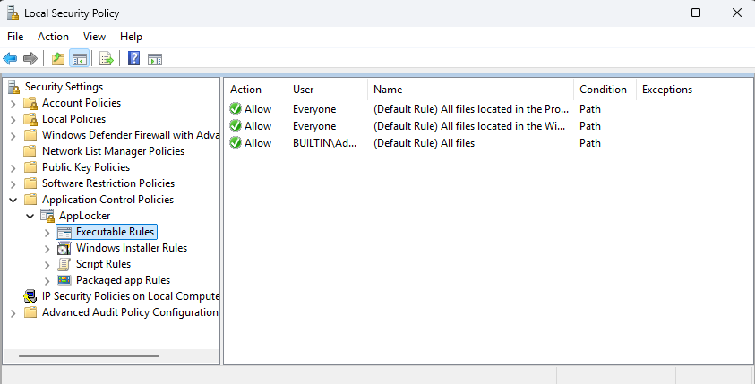

How to bypass applocker(or WDAC) in 2025 on Windows 11
Is applocker bypass still possible in 2025 on Windows 11?

On this site I will display ways to bypass applocker in 2025
So what are the different ways?
Use Winget
Simply use Winget to install whatever you want from the Winget Repo
1. Open the Command Prompt(cmd)
2. Use the winget command to download and install: winget install 9P7KNL5RWT25 (This is sysinternals)
3. Open the folder C:\Program Files\WindowsApps\Microsoft.SysinternalsSuite_2024.12.0.0_x64__8wekyb3d8bbwe\tools\
4. All sysinternal tools can be executed, even if applocker policy is enabled
Video PoC
Here is a video PoC of Applocker(and WDAC) bypass using Winget
C:\Windows\CCM\Temp\
On config manager(SCCM) managed devices, there is a folder: C:\Windows\CCM\Temp\ - Where the INTERACTIVE user group has read,execute and write permission.
1. Put your executable in this folder - C:\Windows\CCM\Temp\
2. Make sure to change the permission on this executable so you have execute permissions
3. Execute your executable
4. Applocker allows execution from files under C:\Windows\ - And that's why this will work.